In this exploration of shader graphics, I primarily used Shadertoy to create visual compositions. I
chose
flowers and butterflies as the theme for this project because both elements exhibit symmetrical
patterns,
making them suitable for learning the basics of shader programming. These highly repetitive shapes can
often
be managed using trigonometric functions like sin and cos, as their corresponding pixels can be viewed
as
cyclically arranged along the coordinate axis.
Another function I frequently used in this project is smoothstep, which is often employed to
achieve
smooth interpolation. For instance, it can smoothly transition color values during shader calculations,
creating gradient effects, or be applied to shapes in a similar way. In most of the displayed graphics,
smoothstep was used to generate oval shapes. Additionally, I experimented with iTime to create several
dynamic butterfly animations.
I also explored the Shadertoy community and came across some inspiring works, such as Philippe
Desgranges’ sakura (cherry blossom) creation. I iterated on his original work, modifying it to create a
beautiful effect of falling flower petals.

 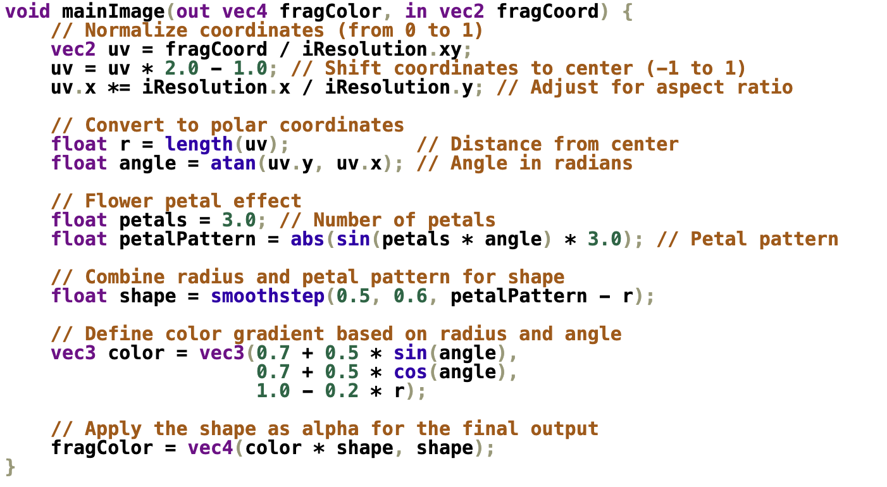
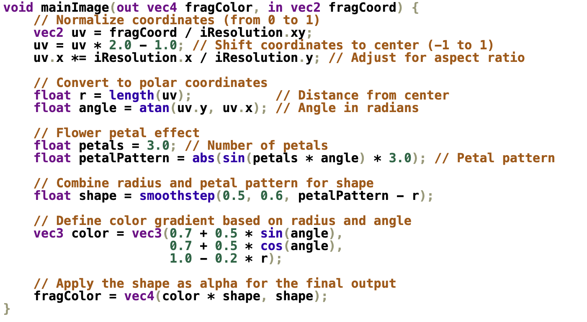
Using abs(sin()) to create flower petals. Using smoothstep to control the shape.
 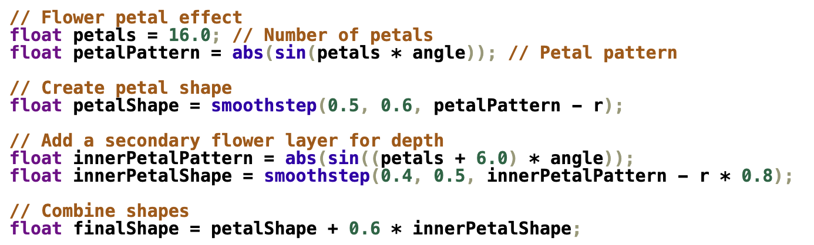
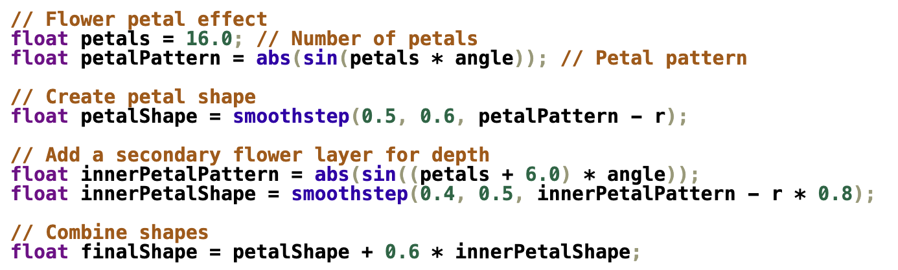
 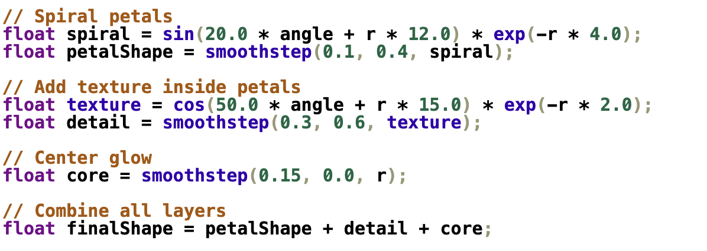
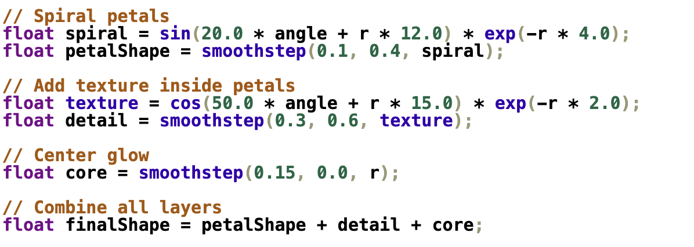
Trying to add an additional layer to achieve more complex effects. Also, play with sin and cos.
 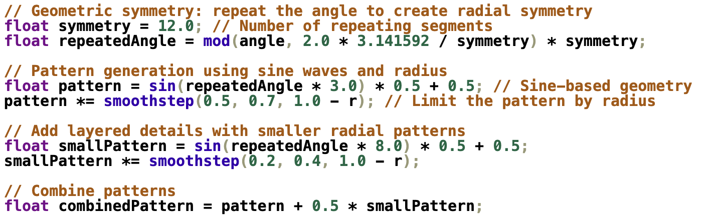
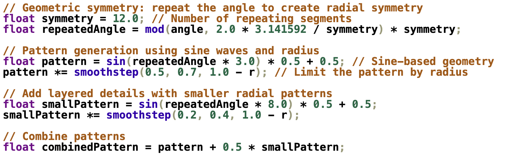
 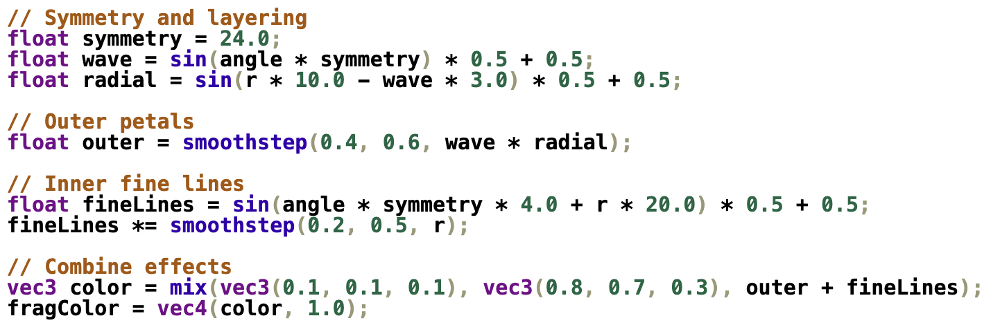
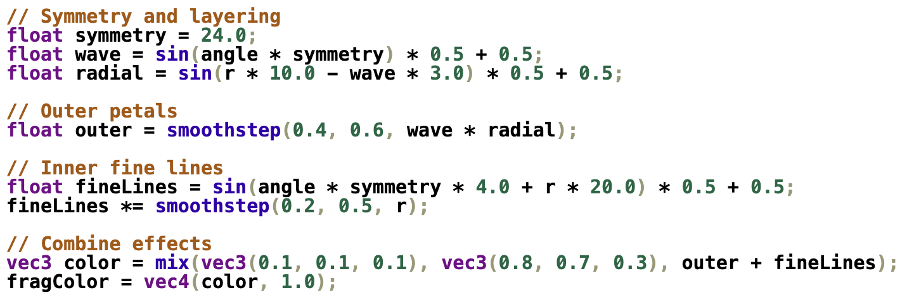
 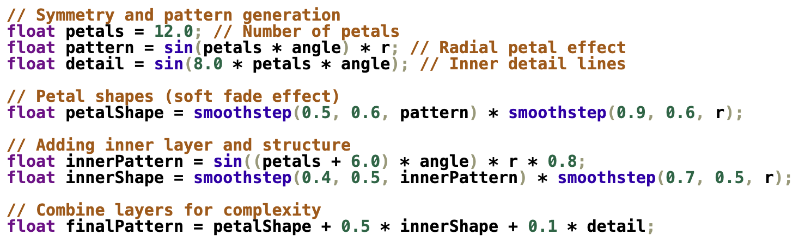
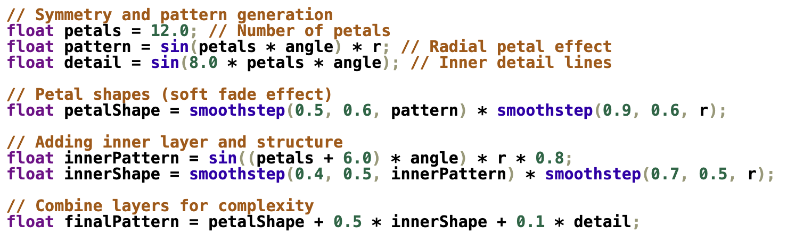
 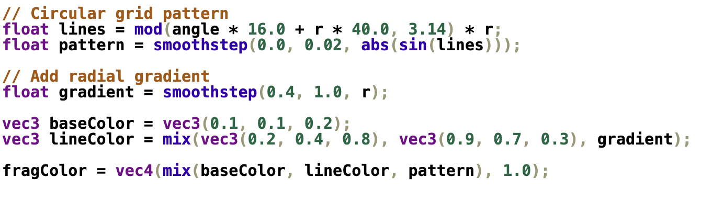
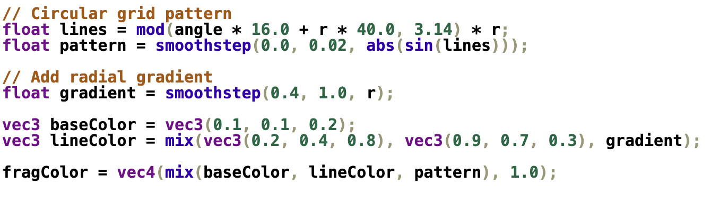
Based on the previously developed graphics, I experimented with different combinations of shapes and colors. Similarly, I primarily used sin/cos and smoothstep functions.
 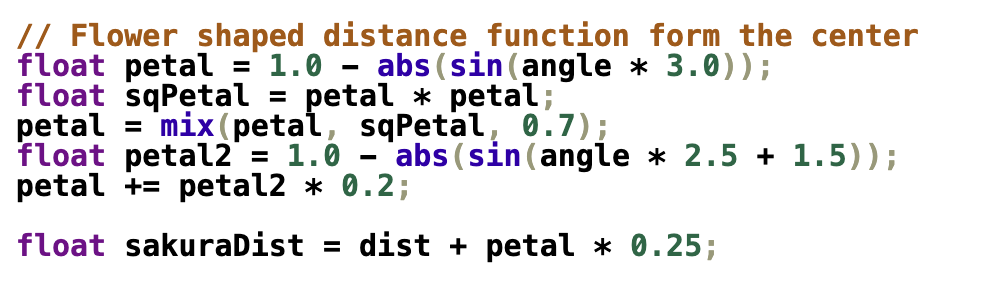
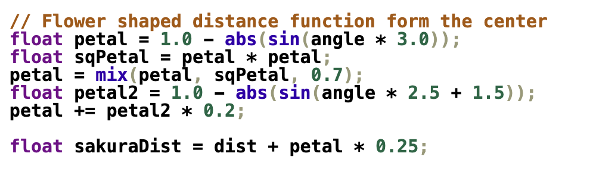
This is Philippe Desgranges’ cherry blossom artwork. I analyzed the source code and identified parts similar to my previous explorations, such as controlling the number and shape of the petals. Based on this, I made modifications to the original work.


 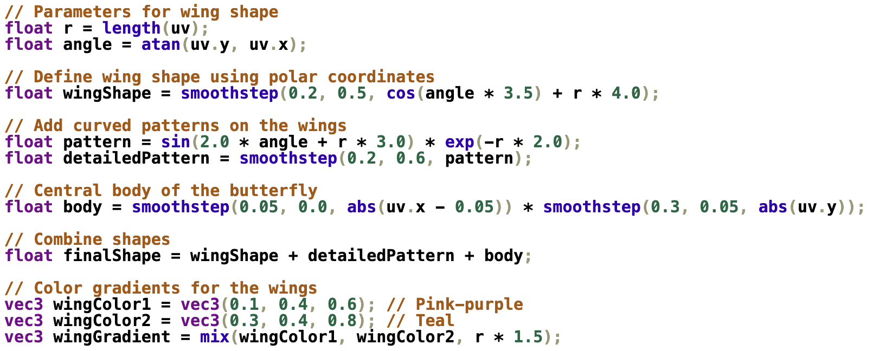
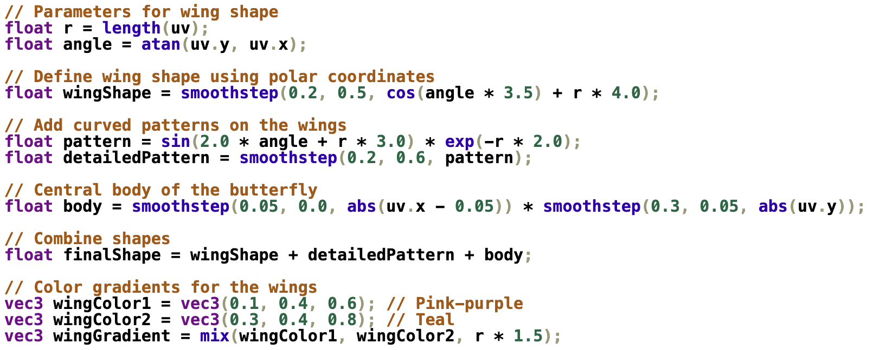
Similar to the flowers, by overlaying different shapes, a butterfly-like figure can be formed. Here, I introduced the exp() function, which can be used to create the curved effect for the “wings.”
 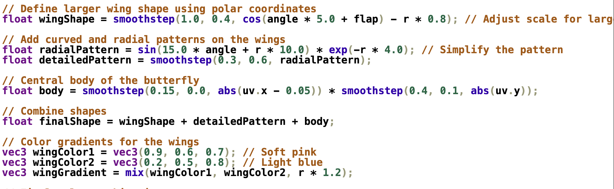
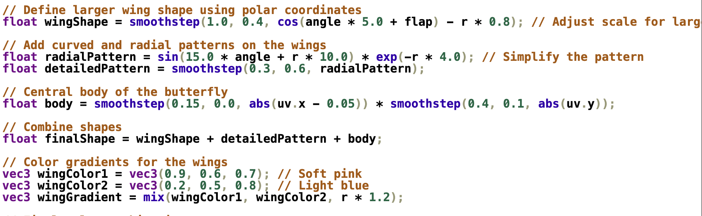
 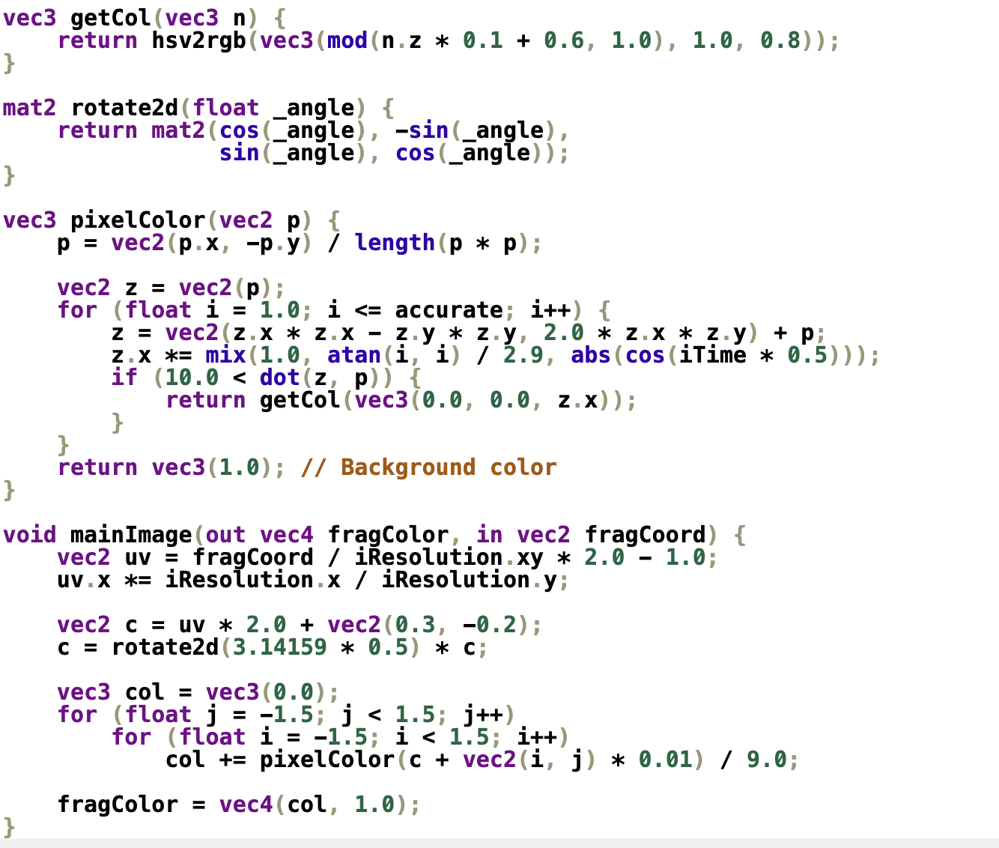
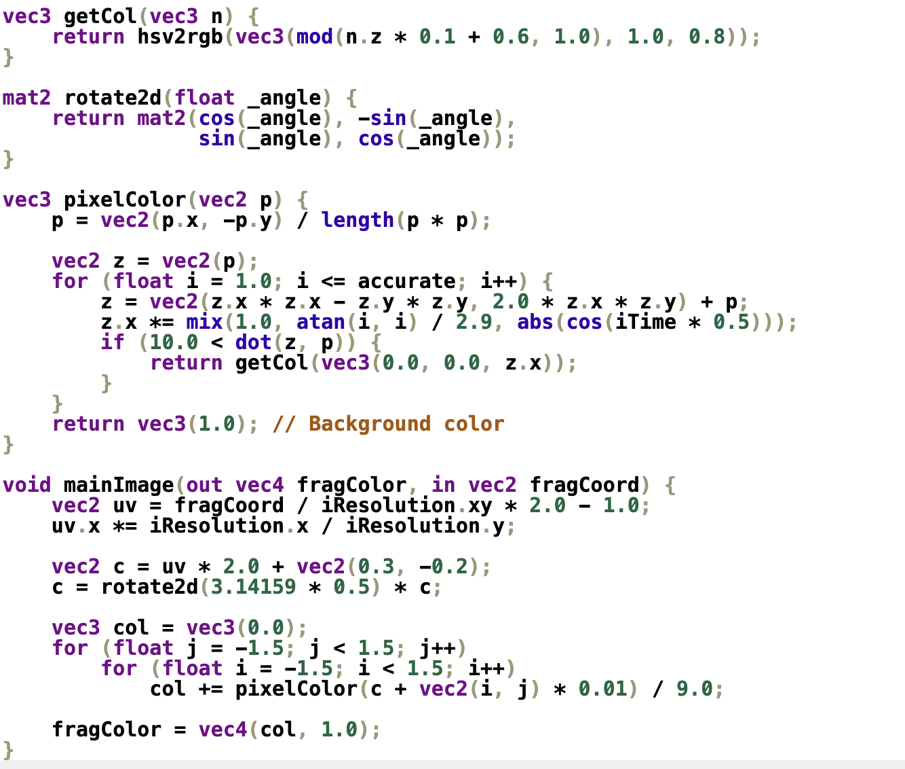
This work is inspired by Seyed Morteza Kamali’s butterfly. I retained its dynamic shape and made modifications to the colors, transforming the butterfly’s texture into a look resembling a “signal loss” effect.
 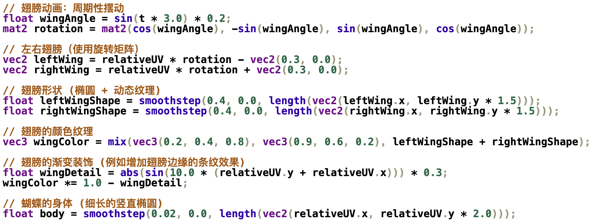
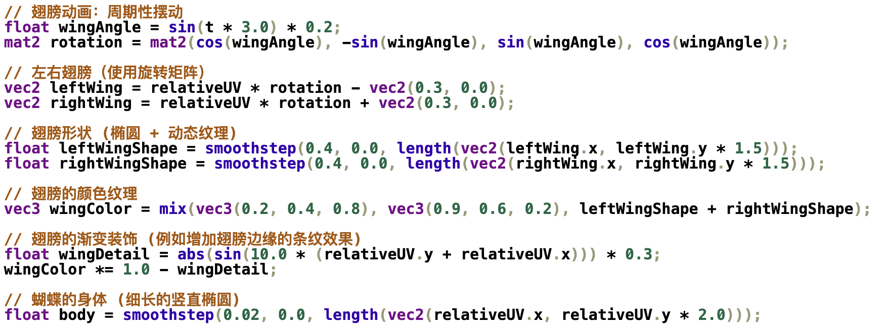
If we try switching perspectives, a dynamic butterfly in a shader could present an intriguing effect. Here, I used a rotation matrix to create a flat 3D effect, allowing control over the butterfly’s left and right wings.